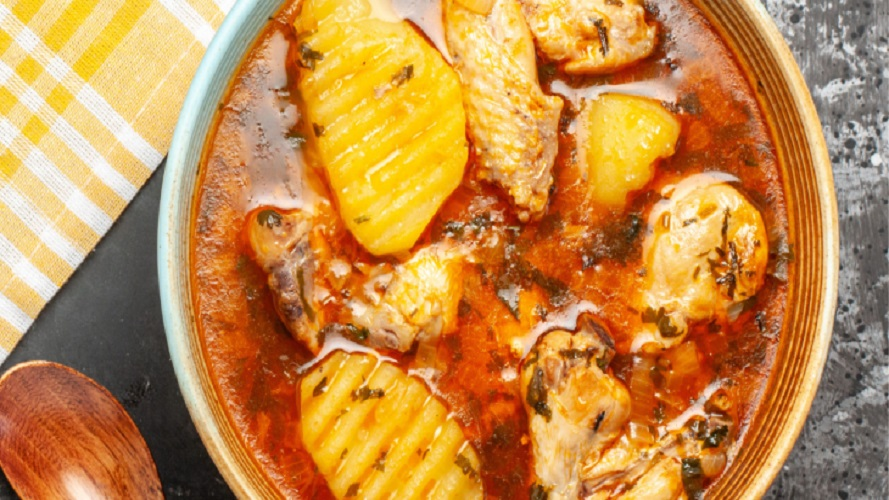

FRANGO FRITO
-
- 700g de filé de peito de frango
- 1 colher (sopa) de vinagre de maçã
- 3 dentes de alho
- Sal e pimenta
- 3 ovos
- 3 colheres (sopa) de creme de leite
- 1½ xícara de farinha de trigo
- 3 colheres (chá) de páprica picante
- 1 colher (chá) de açúcar mascavo
- 1 colher chá de alho em pó (opcional)
- Sal
INGREDIENTES
MODO DE PREPARO
Corte o frango em cubos de aproximadamente 3cm.
Coloque os cubos em uma tigela, tempere com sal, pimenta, vinagre e alho amassado. Deixe tomar gosto por aproximadamente 30 minutos.
Quebre os ovos em um prato fundo, adicione o creme de leite e bata com um garfo, se a mistura estiver muito grossa, adicione meia colher de água.
Em uma tigela coloque a farinha, a páprica, o açúcar, o alho em pó, uma pitada de sal e misture.
Passe cada cubo na farinha de trigo, no ovo e depois passe novamente na farinha.
Coloque óleo em uma panela, depois que estiver quente, frite os cubos de frango aos poucos.
Deixe escorrer sobre papel toalha e sirva.
GRANGO GUISADO
- 
-
- 1 galinhas partida em partes
- 300 gramas de batata descascada e cortadas em 4 partes
- 1 tomate cortado em pedaços
- 1 pimentão cortado em pedaços pequenos
- 1 cebola cortada em pedaços pequenos
- 2 dentes de alho
- 1 folha de louro
- 2 tabletes de caldo de tempero de galinha
- 1 colher de sopa de colorau
- 1 colher de sopa de cominho
- 2 colheres de sopa de extrato de tomate
- 1 colher de sopa de vinagre
- 1 colher de sopa de azeite
- 1 colher de sopa de margarina
- ½ xícara de água
- Pimenta-do-reino a gosto
INGREDIENTES
MODO DE PREPARO
Cozinhe as batatas até ficarem macias(cerca de 20 minutos).
Retire do fogo, escorra a água e reserve.
Em uma panela grande refogue a galinha.
Adicione a água e todos os ingredientes.
Deixe cozinhar por mais ou menos 30 minutos.
Adicione as batatas e cozinhe por mais 5 minutos.
Sirva a seguir.
FRANGO ASSADO DE FORNO
-

-
- 1 frango inteiro limpo (1,5kg)
- 2 colheres (sopa) de manteiga
- 3 dentes de alho amassados
- 2 colheres (sopa) de vinagre de maçã
- 1 colher (chá) de Pimenta-do-Reino Preta
- 2 colheres (chá) de Salsa
- C2 colheres (chá) de Cebolinha Verde
INGREDIENTES
MODO DE PREPARO
Pré-aqueça o forno em temperatura média (180ºC). Em uma assadeira, coloque o frango e faça alguns furos com auxílio de um garfo. Reserve.
Em uma tigela, misture a manteiga, o sal, o alho, o vinagre, a Pimenta-do-Reino Preta Moída, a Salsa e a Cebolinha Verde. Espalhe a mistura dentro e fora do frango reservado Cubra com papel-alumínio. Leve ao forno por 40 minutos.
Retire o papel-alumínio e leve ao forno por mais 40 minutos, regando com o caldo da assadeira de vez em quando até dourar e o caldo reduzir. Sirva em seguida.